Switching On:
1. Switch on the sockets for microscope (1) stage controller SMC 2009 (2), focus controller FC.2 (3), X-Cite lamp (4), Zeiss camera (5), filter wheel (6).
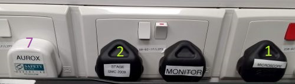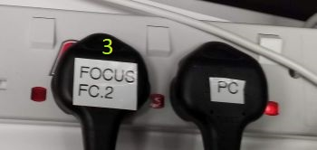 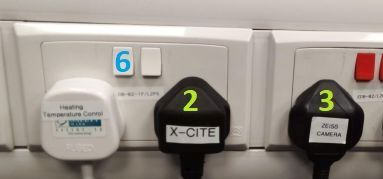
2. Optionally (if you plan to use it) switch on sockets for Aurox LFC (7), heating unit and temperature control (8) or syringe pump (9).
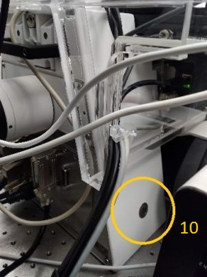3. Switch on the microscope stand (10).
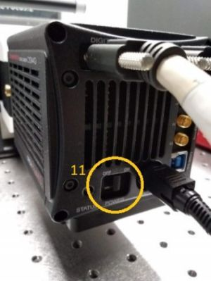4. Switch on the computer, log in as Zeiss User and start ZEN Blue or Visionary (Aurox) software. Before starting the software, check that the cameras are switched on (11).
5. When starting ZEN Blue, select ZEN Pro.
You will be prompted to start microscope stage calibration.
Attention: before starting the stage calibration make
sure the stage is empty and objective is lowered
down to avoid the risk of a mechanical collision.
Switching Off:
1. Make sure you have saved your data and turn off ZEN or Visionary software.
2. Move the stage to the Load position (by pressing the lower button next to the focusing knob or by pressing the button at the touchscreen panel) and remove your sample.

3. If you have used an immersion objective, wipe it clean. Use the lens cleaning tissue. For cleaning oil immersion, moisten the tissue at the solvent dispenser. Always wipe the objective only once, in one direction. If this is not sufficient, repeat with a new piece of tissue. Never reuse the tissue.


4. Switch off the sockets you have switched on during the switching on procedure.
5. Shut down the computer.
6. Make sure you leave the microscope room clean. Spray with 70% ethanol and wipe any surfaces that could have been in contact with biological material. Do not leave any samples or any other belongings behind.
Axio Observer 7 Imaging:
Transmitted light imaging:
A simple transmitted light imaging experiment can be set up in the Locate tab. In general, the Locate tab allows you to set any simple imaging experiment; however, for more complex automated acquisition modes such as multi-channel or multi-position imaging, we need to go to the Acquisition tab as we will discuss later.
There are two panels in the Locate tab: Light Path and Camera. Let us look at the Light Path first. The panel displays a diagram of microscope parts in a topology corresponding to their physical locations (what is on top in the diagram is on top in reality).
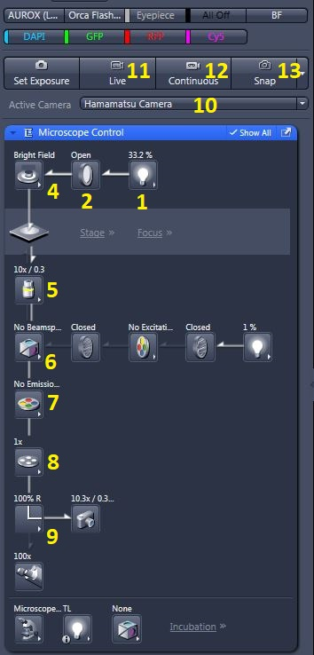The transmitted light arm is almost fully controlled by the software and consists of a lamp (1), shutter (2), field-stop (3, not included in the diagram, since that is the only manual component in the path, see the image below) and condenser (4). Clicking at the arrow in the lower right-hand side corner of the respective box opens a dialogue with settings. The shutter (2) is an exception as it is only toggled between two states (open/closed) by clicking the box.
The voltage of the lamp (1) can be set - it changes the intensity of the output light.
The field stop (3) defines the illuminated area, this is used when setting Koehler illumination.
The condenser (4) settings dialogue contains selection of the mode of contrast (brightfield, phase contrast or DIC). Phase contrast requires specialised objectives, check the system overview to find which objectives support phase contrast. Alternatively this information can be found from objective details displayed at the touchscreen panel. For phase contrast, the objective needs to be matched with the correct phase ring (Ph1, Ph2 or Ph3).
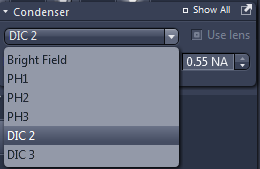
For DIC, the objective has to be matched with the correct prism in the condenser (see the details at the touchscreen panel) and a few more manual components are involved as described in the following box:
| Setting up DIC: |
|
 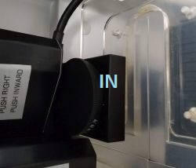
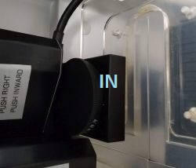The numerical aperture of the condenser can be also set here. This influences the intensity of the light at sample as well as the contrast and resolution of the images. For brightfield the rule of thumb is: Condenser NA = 1/2 Objective NA. For phase contrast, the highest available condenser NA is usually selected.
The current condenser contrast mode/NA is also displayed at the touchscreen panel (status bar at the bottom, brightfield (BF)/NA = 0.9 in the example).
Other components are common for the transmitted light and fluorescence paths; they are the objective revolver (5), the beamsplitter (6), the emission filter (7), the tube lens (8) and the intermediate phototube (9).
For transmitted light we need neither a filter nor beamsplitter, so we select empty positions for both.
The tube lens turret (8) has three positions: 1x magnification, 1.6x magnification and 2.5x magnification; the overall image magnification is Tube-lens magnification x Objective magnification).
The intermediate phototube (9) selects whether the light will go to the eyepiece or to the camera. The right-hand camera port is used for widefield imaging (Axio Observer 7). You can also control this from the touchscreen panel:
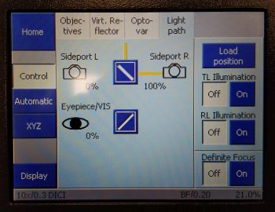The Light Path panel also contains a selection of camera (10) to be used for image acquisition. If Aurox Clarity hasn't been switched on, only a single camera is available, if Aurox Clarity is on, there is a choice of 2 cameras - select #2, which is the one mounted on the right-hand side port.
Next we'll have a look at the Camera panel. The only parameter here to set is the exposure time. For brightfield it can be usually quite short (order of ms usually); for phase contrast and darkfield, longer exposure and/or higher lamp voltage are typically needed. The exposure time can be optimised automatically by pressing Set Exposure. See notes on optimising image intensity.
Note: If Auto Exposure option is checked, the exposure time will be automatically optimised for each image frame captured which may result in varying exposure times within a series of images.
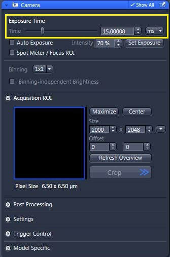This is all for the settings. If we have loaded a sample, we can view it in the eyepieces or on the screen using live camera image - Live (11) or Continuous (12), and focus the sample by turning the focusing knob (located on the sides of the microscope body as well as on the side of the touchscreen panel). Once the sample is in focus, we can take static images by pressing Snap (13). See notes on adjusting the display of images in ZEN.
We can toggle the objective position between the Load position and the last Working position (position at which images were taken) by pressing the buttons next to the focusing knob or on the touchscreen panel.
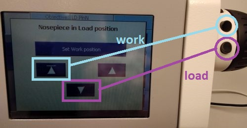
| Koehler illumination: |
|